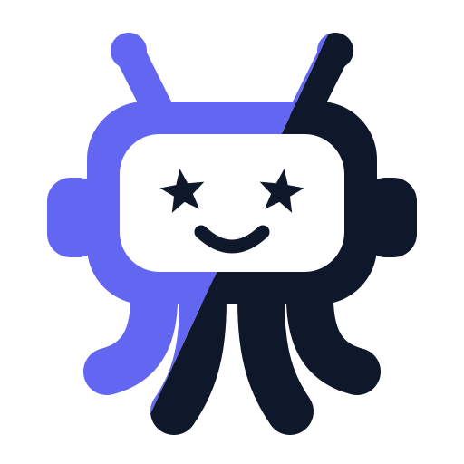
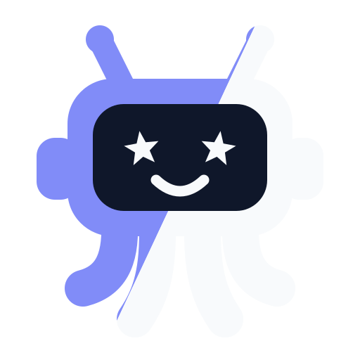

零依赖 Python CLI · 扫描 · 统一 · 压缩
你的上下文，测试过有没有浪费 token？工具装了一堆，完整 schema 全量塞进去——白花的 token，哪些能省，测试过吗？mcptoon 把工具清单砍掉 99.2%，schema 不进上下文；调用返回的输出，TOON 编码再省约 34%。（255 工具真实参考清单实测：全字段对比只列名，cl100k 尺；压缩往返测试无损。）
装了好几台 agent——Claude、Codex、Hermes、OpenClaw 等等——每台都要 AI 重新配一遍？有没有配一次就全部通用的办法？有：装一次 mcptoon，一份配置喂给你的全部 agent——quickstart 自动发现已装的 agent 和你机器上已有的 MCP 服务器，一次写全；以后加工具，在 mcptoon 配一次，一条 sync 推到全部机器——agent 会敲命令就能用，免插件、一台都不用再配。
测试自己的机器，零 Node 依赖。下面是这台开发机的现场输出：
$ pip install mcptoon && mcptoon stats
Tools discovered: 69
Full JSON tokens: 15,859
Slim manifest tokens: 11,724
─────────────────────────────────
Tokens SAVED: 4,135 (26.1%)
Usage: 976 calls, 881/976 success
Per-server token savings:
sequential-thinking 1,206 → 436 (-64%)
filesystem 3,404 → 2,343 (-31%)
bsk-tools 761 → 544 (-29%)除了只展示三台服务器，其余逐字原样；完整清单在你机器上。stats 用的是 4 字符≈1 token 的粗估尺——这是我们机器的数，不是对你机器的承诺。尺子对照：Token 账。


−99.2%mcptoon inspect 按需取回。你的数，mcptoon stats 自己测。
NOT US TALKING
对上面那个数将信将疑？正常的。下面每一行，都是第三方自己发布、自己署名的测试结果，链接直达原文：
这张表里每个数都是来源方自己发布的测试结果——它们证明问题真实存在；−99.2% 才是我们的数。两边不互借权威。
TEST. DECIDE. CUT.
不用接线，不用重写配置。第一步把包放下，第二步扫你已有的东西，第三步测你自己的账，第四步挑一档砍下去。
一行命令。纯标准库，零第三方依赖，无常驻进程，不用账号。
pip install mcptoon
仓库里还有一行式脚本 install.sh / install.ps1。先说清楚：它们的最后一步就是直接跑 quickstart——装完当场写配置。想自己掌控节奏的，用 pip，一步步来。
读这台机器上已有的 MCP 配置：Claude Desktop、Cursor、Cline、Windsurf——四类客户端、各自的候选配置文件，统一成一份 ~/.mcptoon/config.json。这一步写的是 mcptoon 自己那份配置；往客户端里写，是 sync 的事，而 sync 必须你亲口让它去。
mcptoon quickstart
读你自己的清单，报它每轮花多少——你机器上真发生的数。我们这台机器截至页面制作时读到 45 个工具：8,380 → 5,635（省 32.8%）。两点要交代：stats 的第二行是简化后的 schema 档（描述截断、类型保留）；它的尺是 4 字符≈1 token 的粗估，跟参考样本用的 tiktoken 不是同一把尺，这两组数各说各的，混着看会算错。
mcptoon stats
CLI 路线（砍得最狠）：清单默认只列名；动手调用前用 mcptoon inspect <server> <tool> 现取那一个工具的参数；认了，再 mcptoon sync 写进客户端。桥接路线（给必须见到 MCP 服务器的客户端）：mcptoon serve 站在你客户端前面，发的是简化后的 schema，省下来的是字段那一层——下面 OpenClaw 那对 −798 测的就是这一档。两条路线各测各的账，数字不通用。
mcptoon manifest
SAME SETUP, TWO BILLS
市面上有人做统一配置，也有人做"挑工具列表"。挑列表只减条数：被选中的那些工具，字段照发。我们动的是"发不发字段"这件事本身。
YOUR BILL, DECODED
两个抓手：一个是公开的基准，原始数据你翻得到；另一条命令测的是你自己的机器。
manifest 裸跑）还有一层：换种写法，不砍字段。同一份清单可以走 TOON 编码：47,438（−34%），字段一个不减、只换表示法——它是编码变体，和三档不混着站。名字+类型档的形状大致长这样：search|query:s*|limit:n——星号标必填，s 是 string、n 是 number。压缩率跟着档位走；换成 50 工具规模还是 −99.2%，工具多少个反而不重要。按你的客户端需要看多少，挑站在哪一级。
这些数打哪来的。一份 255-tool / 50-server 的参考样本，按 tiktoken cl100k_base 计数；原始数据公开在 benchmark_data.json，方法写在 tiktoken-benchmarks.md，能自己复跑。也披露：早前发布过一个 91%，出自一个描述更短的样本，本页已不再用它。mcptoon demo 打印的就是这张表，测的不是你机器；你的机器归 mcptoon stats。
三组数来自三处，各有各的尺子，放在一起只为对照。①参考样本：公开的 255 工具 / 50 服务器清单，cl100k 尺。②我们的机器：造这页那台——stats 粗估尺 8,380 → 5,635（截至页面制作时）；评审机复测（cl100k 尺、同一份 45 工具缓存）：全字段 7,793 → 名字+类型 711 → 只列名 161。③你的机器：mcptoon stats 自己测。
--toon，返回结果按 TOON 格式编码它叠在清单省法之后、只在你主动要求时生效：mcptoon call <server> <tool> --toon。默认输出 JSON、什么都不加就什么都不省；省多少随返回数据的形状变，跑了才知道。demo 现场就印了一个例子：同一份数据 21 → 17 token——少 19%。
LIVE WIRING, NOT A LOGO WALL
造这个页面的那台机器上，两个真实客户端都指向 mcptoon serve。它们的配置原样贴出，以及实际发生了什么。
在 ~/.openclaw/openclaw.json 的 mcp.servers.mcptoon 键里：
{ "command": ".../mcptoon.exe", "args": ["serve"] }
同一会话、同一模型，相隔六分钟两次调用，两边都返回了正确结果：
echo 服务器直接注册 — 输入 43,448 tokensecho 服务器，改经 mcptoon serve 桥接 — 输入 42,650 tokens这一回合少吃 798 个 input token（截至页面制作时）——为一个最普通的 echo 工具。这是 serve 桥接档的数（清单字段变轻），和 −99.2% 那个只列名档是两回事；省下的量随注册的工具数增长。一对调用、一个模型：这是我们测到的方向，不是保证。
在 %LOCALAPPDATA%/hermes/config.yaml 里：
mcptoon:
command: mcptoon
它的 MCP stderr 日志记录了完整生命周期：
starting MCP server 'mcptoon'
serve started — stdio bridge mode
Initialize from client: {'name': 'mcp'}
Client initialized notification received
这一条在 hermes mcp list 里现在显示 disabled。所以这个说法很窄、但真实：它在那里握过手，也注册在那里——不代表它此刻正在运行。
mcptoon 直接写入的对象（mcptoon sync）：Claude Desktop · Cursor · Cline · Windsurf · VS Code Copilot，其中 Cursor 写的是全局 ~/.cursor/mcp.json。项目级只有一个例外：Codex，写当前项目的 AGENTS.md。其余任何能拉起 stdio MCP 服务器的客户端——包括 OpenClaw 和 Hermes——都通过 mcptoon serve 接入：一条入口，零手写每客户端配置。
THE SMALL PRINT, LARGE
下面每一行，要么有 CI 强制，要么钉在公开记录里。没有营销算术。
徽章会漂。重新发布本页前，按当期 CI 重刷这一块。
ASKED, ANSWERED
MCP（Model Context Protocol）是 AI 客户端往外挂工具的方式——文件、搜索、数据库、浏览器。代价在于：你每加一个工具，在你开口提问之前，它的完整描述就已经进了模型上下文。这笔账涨得很快。
扫描、合并、清单生成本身全在本机完成。只有一处会出网：参考 demo 那一步，它要拉起官方的公开测试服务器（everything），从 npm 上取它的代码——取的是公开的包，不含你的任何配置。要一条网络请求都不发：用你自己的服务器跑 mcptoon manifest --compact（评审机按 cl100k 尺复测：输出 161 个 token，装下全部 45 个工具名）。
这一档只改发现清单的发法，不碰调用。默认档（只列名）适合模型已经知道要用什么；动手之前用 mcptoon inspect <server> <tool> 现取那一个工具的完整参数，确认了再调。需要客户端自己看见参数，就换"名字+类型"档（参考样本 8,282，−88.5%）或全字段——三档都是 mcptoon manifest 的旗标差别。砍多狠是你的旋钮，不是一锤子买卖。
参考 demo 用 npx 拉起 MCP 官方的 everything 参考服务器——这个包不在 mcptoon 里，所以它需要 Node.js、首次要联网拉包。测试自己机器的路径（quickstart → stats → manifest）纯 Python，不需要 Node。
是参考样本的数，我们宁可你现在就知道，也好过以后失望。你自己的数走 mcptoon stats：我们这台机器读到 45 个工具、8,380 → 5,635（−32.8%，截至页面制作时）——离 99.2% 很远，因为它测的是简化后 schema 档、用的还是粗估尺。同一台机器换 cl100k 尺砍到底，评审机复测读数是 7,793 → 161。−99.2% 和 −32.8% 两个数都真，测的对象不同：前者说样本能砍到的上限，后者说这台机器的现况。原始数据行就提交在仓库里，同一套测试在 5 个、50 个工具上也有——你能看到曲线的形状，而不是一个挑出来的点。
扫描（quickstart）读已有配置，写的是它自己的 ~/.mcptoon/config.json，不回头改客户端。往客户端里写是 sync 的职责，只有你跑了它才动：当场打报告、带 --dry 预览；只动 mcpServers 那一个键；不加参数默认一次写它探到的全部客户端，想只写一个，用 --agent 点名。Codex 例外——它写的是当前项目的 AGENTS.md。退路说清楚：删 ~/.mcptoon/ 清掉的是 mcptoon 自己的配置与缓存；sync 写进客户端的条目留在原地，照报告里的位置删掉即可。
是。Apache-2.0 开源。全部代码都在 GitHub 上，mcptoon stats 读的是你自己的服务器，所以 token 这笔账你永远不用听谁说的，自己看。